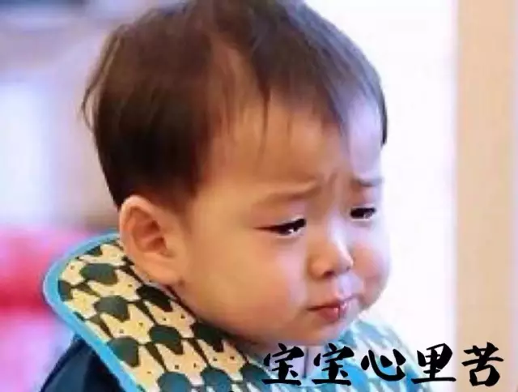
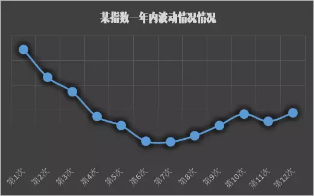
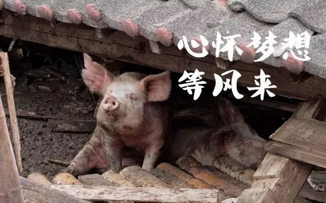
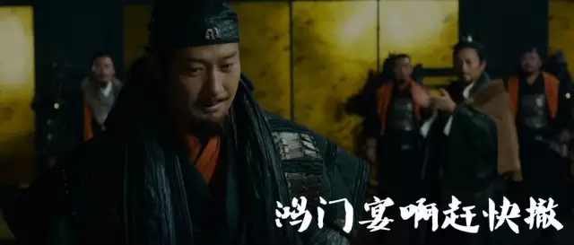
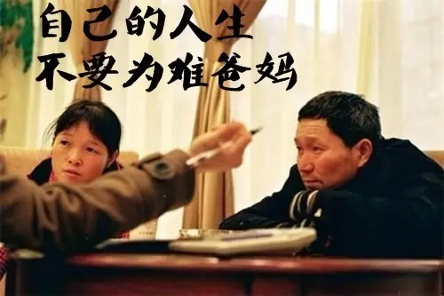

什么背景都没有的年轻人，如何稳赚100万？
本文来自吴晓波频道（ID：wuxiaobopd），转载已获得授权
一个家世背景普通，毕业之后没什么积蓄的年轻人，如何赚到100万？
论快，这几种很快：
① 出门左转买张彩票，明天中头奖；
② 几万元全仓买股票，翻番后换别的，做3-4遍；
③ 创业，公司融资估值几千万，成为千万富翁。
大家肯定也明白，这样的例子很少，概率低，容错率小，可复制性也很弱。
小巴讲一位朋友老A的案例，这个案例没有买股票、创业那么跌宕起伏，甚至连房子都没买，他是靠清晰的规划、实实在在的纪律，从零起步历经8年，到30岁时积累起100万的可投资资产。这种方式，在小巴看来，当然不是最快的，但却是最可复制的。
老A在2007年大学毕业来到深圳，工资不高，一个月3000。他不太乱花钱，一个月下来还能剩下千把块。他也很清楚，要学会投资理财，一定得自己去体验，就算一开始亏本了，以后工资肯定会涨，现在亏的也是小钱。
从2008年1月开始，每个月15号发完工资，他先取出1000块钱，拿去买基金。当时的基金不像现在这样繁多，完全不懂的他选了一支，事后知道是股票型的。
老A的第一步
每月工资拿出1000买基金
08年股市的全年主题就是跌、跌、跌，大盘指数从07年最高的6000多点跌到不到2000点。老A第一年的12000块钱，到了12月31号盘算，还剩下7200多，亏掉了40%。

虽然事先做好了亏钱的准备，老A还是很郁闷，甚至想一卖了之，以后再也不买了。犹豫一阵后，他还是决定再试试，毕竟钱不多，时间也不长。
他买了好几本投资理财的畅销书来看，这些书在今天的他看来，不少是胡说八道的过时内容，但对于刚刚起步的他，还是帮上了不少忙。他也忘了从哪本书上看到了一种方法叫定投，告诉他定投要坚持，不要担心短期的跌，要继续投，等到回涨的时候，会有意外的发现。
老A的第二步
亏了不管，继续定投
这个道理，小巴在以前的文章里也举过类似例子。比如，某一支基金某一年走势如图所示，如果你每一期投1000元，一共12期，虽然点位最后没有年初高，但期末的时候其实是赚钱的，12000块钱的投入，变成了14939.14元。
注：在公号（非本文）回复“基金”查看往期相关文章。

老A数学很好，书上的这个道理，一点就通。虽然点位没有恢复，但一笔一笔地不断投入，平均成本被拉下来了，所以后面涨回去，即便没有回到当初的高位，还是有可能赚钱的。这是市场周期的规律，他觉得应该好好利用这一点。
他继续每月1000元的投资。又一年过去，09年末的时候，大盘回到3000点，距离他08年初第一笔投资的时候5000多点的位置，还有近2000点的差距，但他居然已经回本盈利了。
这时候他的账户上，投入的成本是24000，而当时的价值则是28000多，还赚了4000。
这下他彻底搞明白了，定投就是买买买，别管短时间内的涨跌，等一波不错的涨幅，收获就很多了。

2010年，工作快三年的他，月收入比毕业时涨了1倍多，于是他每月投入加到3000块钱，除了之前的基金，还有一支指数型。2010年开始，一熊熊三年，但期间他也一直没中断过。
老A的第三步
努力工作，增加收入
定投金额酌情跟着涨
2012年老A结婚了，他的夫人听他讲了一番定投的道理，也加入进来，两个人一共要投入8000块钱。他们在那个时候好好研究了美国、日本、香港的股市周期历史，还上网查材料、线下找人学习，目标就是搞明白怎么选择好基金。
他们将此前的基金全部清仓，精心挑选了4支历史业绩不错、团队过硬、标的以成长性股票为主的基金，重新开始。
注：婚后在双方家长的资助下，老A夫妻买了房子，去掉房贷和日常支出，两人收入绝大部分都用来定投。
老A定投的成绩
| 时间 | 每月投入 | 总投入 | 期末账户值 |
08-09年 | 1,000 | 24,000 | 28,000+ |
10-11年 | 3,000 | 72,000 | 57,000+ |
12-15年3月 | 8,000 | 312,000 | 674,000+ |
从2012年开始，基金一直涨得不错。直到去年春节后，他回到公司上班，发现同事间讨论股票的人突然多了起来，后来有同事干脆推荐他买某一支股票，告诉他一定会涨。
他警觉起来，他了解一个“鸡尾酒会理论”，当有很多人给你推荐股票的时候，就是一种撤退的信号了。

回家和太太开了家庭会议后，他们卖出了所有基金。这笔钱的一半，他们拿来拨备给未来几年的支出大项，比如孩子的教育经费、购车，甚至置换房产等；另一半，他们打算分成18个月，继续定投，这样他们定投的金额就增加到了20000/月。
当然了，去年到现在这个阶段股市大跌了好几轮，他们的账面上还是有小幅的亏损。但是老A并不担心，他说一两年内的波动都正常，他每个月一笔一笔投入进去就可以了，过些年会回来的。
老A的第四步
一个定投周期，阶段性退出后
继续加码接着上
到15年年底盘算的时候，定投的资金，加上其他方面的积蓄，以及最近一年的收入，他们家的可投资资产，已经超过了100万。
老A在过去这些年的经历，揭示了一个最朴素的财务原理：
投资理财时，如果资金量很少、投资的年限也还很短，两只眼睛盯着年化收益率，其实是一种无用的奢谈。老A在工作前四年的定投，虽然折腾来折腾去，但金额总量不大，对之后的影响也很有限。他这个阶段的收获，是建立了一套逻辑，让他对此后的定投有了非常完整的预期。
他告诉小巴，你不要把定投当做是投资，你要把当成是一种存钱的方式，就是银行很常见的零存整取。大部分人，就算父母能够有一些资助，基本上够付第一套房的首付已经不错了。这辈子的钱，还是要自己去赚的，难道都要靠爹妈吗？

在所有积累起第一桶金的方式中，相对于创业、炒股票、买房子，定投肯定算不上快，但却是一种起步门槛低、容错率高、可复制性很强的方式。
但是，它的作用，在很大程度上也仅限于此了。很多关于基金定投的文章和宣传，要么强调定投的“懒人投资”“小额投资”属性，要么强调依靠定投实现财务自由。
在小巴看来，这些也不能说错，但它只是一种第一桶金相对比较好的积累方式，初始金额越大、时间越长、收益率越高，资产才会越多的道理，并没有脱离这个范畴。
老A的第五步
积累第一桶金
学习其他的投资
当你积累起上百万的可投资资产，配置就需要更多元化。定投也仍然是很好的选择，但投资上的学习和实践不能停止，比如老A在未来几年会考虑的，还有股权、海外资产、优质房产，甚至于个股的投资。
让我们来总结老A过去8年的经验：
1
刚工作，从工资里拿一笔钱去投资。亏了不要紧，重要的是有了一轮体验，思考出其中逻辑。
2
比起投资理财赚的钱，收入的增长更快，多花些时间精力在工作上，增加的收入再去定投。
3
把定投当成长期的零存整取存款，根据周期看，最长可能到5-7年。
4
股市狂热时期，阶段性退出，这是很考验人的一点。如果用一条最简单的原则去判断，请考虑“鸡尾酒会理论”（具体请自行检索）。
5
进行下一轮的定投。
6
如果是两夫妻，投资的价值观要一致。